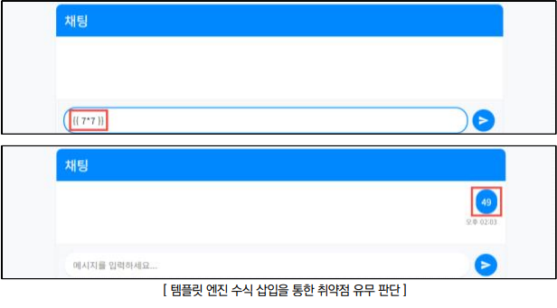
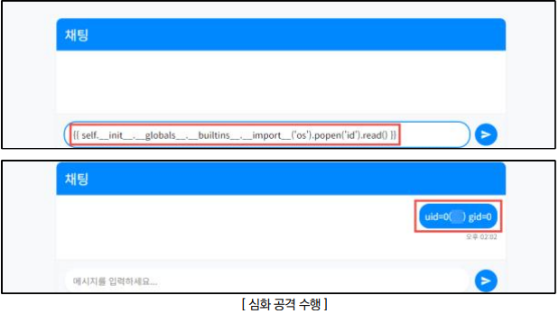

SSTI injection 이란?
- 웹 애플리케이션에서 사용자 입력값이 템플릿 엔진(Template Engine)에 의해 적절한 검증 없이 처리될 때 발생하는 보안 취약점입니다.
- 공격자가 이름 칸에 {{ 7 * 7 }} 같은 코드를 입력합니다. 서버가 이를 단순 문자가 아닌 수식으로 계산하여 화면에 49를 출력한다면, 이 서버는 SSTI에 취약한 상태입니다.
공격이 되면 왜? 위험한가?
- 단순히 계산을 하는 데 그치지 않고, 공격자는 템플릿 엔진의 기능을 악용해 서버의 내부 파일에 접근하거나 원격 코드 실행(RCE)까지 이어질 수 있습니다. 즉, 서버의 제어권을 완전히 탈취당할 수 있는 치명적인 위협
점검 방법
Step 1) 사용자 입력값이 서버 템플릿 엔진 내에서 처리되는지 확인하기 위해 {{7*7}} 등의 수식 삽입 시도

Step 2) 상위 컨텍스트 및 객체 접근을 시도하여 원격 코드 실행의 가능 여부를 판별하기 위하여 페이로드 입력 및 실행 유무 확인

조치 방법
1. 템플릿 언어에서 예약된 의미를 가지는 문자({ } < > % # @ 등)에 대하여 이스케이프 처리
2. 템플릿 엔진의 안전 모드를 사용함으로써 템플릿 내에서 실행할 수 있는 명령을 제한하여 임의 코드 실행 방지
3. 안전 모드 및 내장 함수를 활용하여 보안 조치를 하는 경우 엔진의 버전과 그 버전에서 지원하는 기능을 고려하여 적절한 보안 패치 진행
4. 에러 메시지를 통해 사용된 템플릿 언어 및 관련 취약점에 대한 유의미한 정보를 제공할 가능성이 존재하므로, 노출되는 에러 메시지를 제한
5. 템플릿 엔진 내 사용되는 특수문자를 필터링하도록 웹 방화벽 룰셋 적용